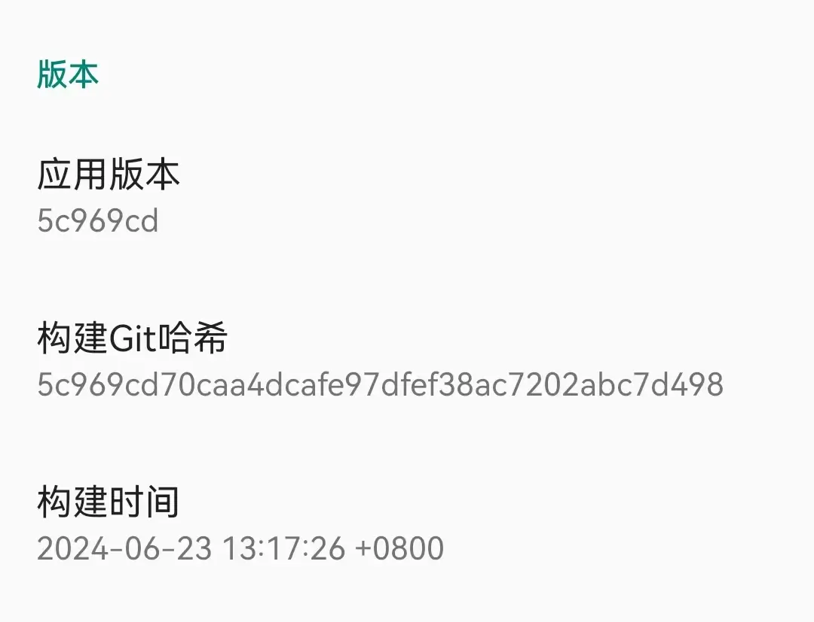

问题
开源的雨燕输入法项目中，在关于界面要实现显示Git提交记录以及点击条目跳转到对应的Github提交节点。
之前的方案是，在每次打包前手动更改对应的值，不但麻烦，且易出错。
技术上分析，一旦打包完成，应用内不具备Git环境，因此没办法通过Java代码在运行时动态获取相关属性。
项目使用Gradle方式构建，那么如何在编译、构建时获取Git最新记录及提交时间等属性呢？
前置条件
- 项目已正常初始化Git资源，并已存在提交记录。
- 项目使用
Groovy方式构建。由于雨燕输入法项目使用Groovy构建，因此该文章介绍使用该构建方案。
Android Gradle插件4.0支持使用Kotlin脚本(KTS)，用于替代Groovy。
KTS比Groovy更适合编写Gradle脚本，Kotlin代码可读性更高，且提供更好的编译时检查和IDE支持。
实现步骤
- 创建方法，获取对应值
在子模块build.gradle中，定义方法获取对应的值：
apply plugin: 'org.jetbrains.kotlin.android'
// kotlin
apply plugin: 'kotlin-android'
def getAPPGitHead() {
return "git rev-parse HEAD".execute().text.trim()
}
def getAPPBuildTime() {
return "git log -1 --pretty=%ai".execute().text.trim()
}
android {
compileSdk 34
// ... 省略对应内容
}
- 执行方法，动态创建变量并赋值
在子模块build.gradle中，执行构建方法buildTypes时，调用方法，并动态创建AppCommitHead、AppBuildTime变量存储Git属性。
android {
compileSdk 34
buildTypes {
release {
minifyEnabled true
proguardFiles getDefaultProguardFile('proguard-android-optimize.txt'), 'proguard.cfg'
def APP_GIT_COMMIT_HEAD = getAPPGitHead()
buildConfigField "String", "AppCommitHead", "\"${APP_GIT_COMMIT_HEAD}\""
def APP_GIT_COMMIT_TIME = getAPPBuildTime()
buildConfigField "String", "AppBuildTime", "\"${APP_GIT_COMMIT_TIME}\""
}
debug {
def APP_GIT_COMMIT_HEAD = getAPPGitHead()
buildConfigField "String", "AppCommitHead", "\"${APP_GIT_COMMIT_HEAD}\""
def APP_GIT_COMMIT_TIME = getAPPBuildTime()
buildConfigField "String", "AppBuildTime", "\"${APP_GIT_COMMIT_TIME}\""
}
}
}
- 项目中调用变量
在项目中使用Java或Kotlin代码，通过BuildConfig使用对应的值。
addCategory(R.string.version) {
addPreference(R.string.app_version, BuildConfig.AppCommitId)
addPreference(R.string.app_build_git_hash, BuildConfig.AppCommitHead) {
val commit = BuildConfig.AppCommitHead.substringBefore('-')
val uri = Uri.parse("${CustomConstant.YuyanSDKRepo}/commit/${commit}")
startActivity(Intent(Intent.ACTION_VIEW, uri))
}
addPreference(R.string.app_build_time, BuildConfig.AppBuildTime)
addPreference(R.string.sdk_version, BuildConfig.SdkCommitId)
}
查看效果：

问题记录
- 通过
buildConfigField动态构建变量未成功。
发现编译时报错：
* What went wrong
A problem occurred configuring project ':app'.
> defaultConfig contains custom BuildConfig fields, but the feature is disabled.
原因在8.x版本的gradle插件中，buildConfigField功能被禁用。
解决方式是在build.gradle中添加：
buildFeatures {
buildConfig = true
}
- 获取其他路径或子模块Git记录。
Gradle支持调用Git命令时，指定Git资源路径,我们能通过指定绝对路径的方式获取其他路径的Git记录：
def getSDKGitRevision() {
return "git --git-dir=/home/gure/devproject/YuyanIme/yuyansdk/.git rev-parse --short HEAD".execute().text.trim()
}
通过这种方式，我们获取yuyansdk的Git提交情况。
- Git Rev-Parse命令
Git命令行工具中的低级命令，用于输出Git引用的确切值，通常用于脚本中，确保脚本能正确识别分支、标签或提交。常用参数：
--abbrev-ref <ref>：输出给定引用的简化形式，通常用于分支名称。
--symbolic：输出引用的完整名称，而不是其SHA-1值。
--verify：尝试验证给定的引用，并确保它存在。如果引用不存在，命令将返回错误。
--short：输出给定对象的短SHA-1哈希值。
--show-prefix：显示从当前工作目录到仓库根目录的路径。
--show-toplevel：显示当前仓库的顶级目录。
--git-dir：显示或打印Git目录的路径。
--show-cdup：显示从当前工作目录到仓库顶级目录的相对路径。
--is-inside-git-dir：如果当前目录是Git目录的一部分，则输出true。
--is-inside-work-tree：如果当前目录是Git工作树的一部分，则输出true。
--is-bare-repository：如果当前仓库是裸仓库，则输出true。
--is-shallow-repository：如果当前仓库是浅克隆仓库，则输出true。
--default <arg>：如果给定的引用不存在，则使用默认值。
--all：显示所有引用。
--branches：显示所有本地分支。
--tags：显示所有标签。
--remotes：显示所有远程跟踪分支。
--quiet：不输出错误信息。
--prefix：输出给定对象的引用前缀。
--max-count <n>：仅输出最多n个匹配的引用。
--min-candidates <n>：在搜索引用时，至少需要n个匹配项。
--no-min-candidates：忽略--min-candidates的限制。
--no-max-count：忽略--max-count的限制。
--no-walk：不进行引用的遍历搜索。
--no-walk-reflogs：不通过reflog来搜索引用。
--no-walk-reachable：不搜索可达的引用。
--no-walk-tags：不搜索标签。
--sort-by <key>：按指定的键对输出的引用进行排序。